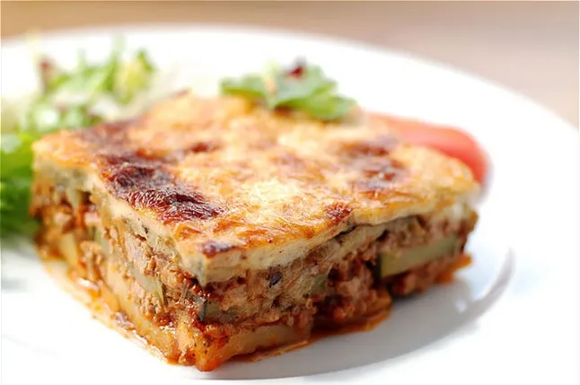

Musaka

Description
This moussaka tastes great! Layers of sliced eggplant are baked in a ground beef sauce and smothered in a creamy white béchamel sauce in this classic Greek dish.
Ingredients
- 3 eggplants, peeled and cut lengthwise into 1/2 inch thick slices
- salt to taste
- ¼ cup olive oil
- 1 tablespoon butter
- 1 pound lean ground beef
- 2 onions, chopped
- 1 clove garlic, minced
- ground black pepper to taste
- 2 tablespoons dried parsley
- ½ teaspoon fines herbs
Steps
- Lay eggplant slices on paper towels; sprinkle lightly with salt. Let sit for 30 minutes to draw out moisture, then pat dry with paper towels.
- Warm olive oil in a skillet over high heat. Fry eggplant until browned, 2 to 3 minutes per side. Drain on paper towels; set aside.
- Melt 1 tablespoon butter in a large skillet over medium heat. Stir in ground beef, onions, and garlic; season with salt and black pepper. Cook and stir until beef is browned, 8 to 10 minutes.
- Add parsley, fines herbs, cinnamon, and 1/4 teaspoon nutmeg. Pour in tomato sauce and wine; mix well. Simmer for 20 minutes. Allow to cool, then stir in beaten egg.
- Scald milk in a saucepan over medium heat.
- At the same time, melt 1/2 cup butter in a large skillet over medium heat.
- Whisk flour into butter until smooth. Lower heat; gradually pour in scalded milk, whisking constantly until it thickens. Season béchamel sauce with salt and white pepper.
- Preheat the oven to 350 degrees F (175 degrees C). Grease a 9x13-inch baking dish.
- Arrange a single layer of eggplant in the prepared baking dish.
- Pour béchamel sauce on top and sprinkle with remaining 1/4 teaspoon nutmeg. Cover with remaining cheese.
- Bake in the preheated oven until bubbly and browned, about 1 hour.